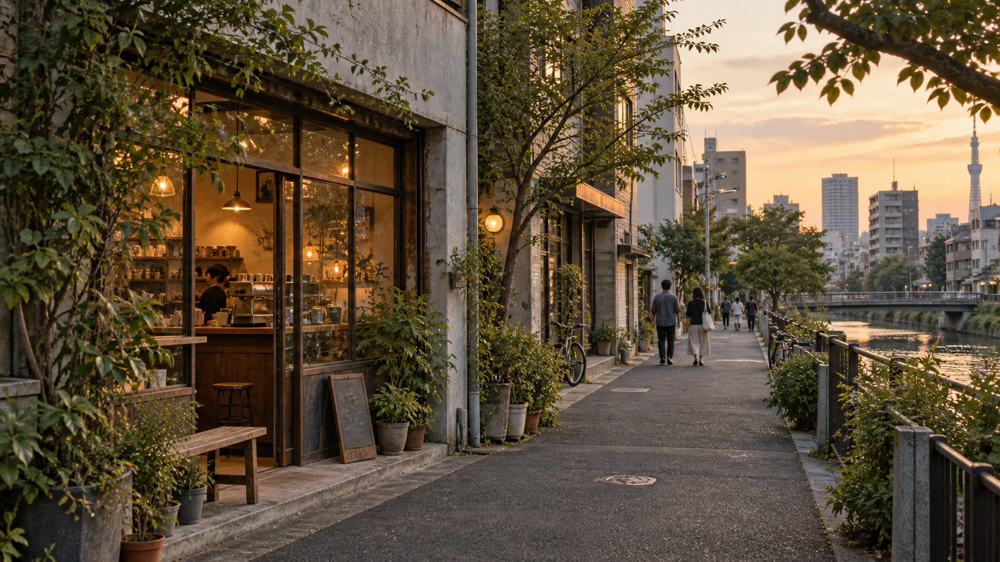

The Musts
See what you came for. The places that give a city its shape.
Curated city itineraries
Take the scenic route
The places worth seeing, the ones you would not have found alone, and the freedom to make the rest of the trip yours.
Explore cities ↓
A better way through a city
See what you came for. The places that give a city its shape.
See what you did not know you were looking for.
Spend the rest of your trip following your own interests.
Current field notes